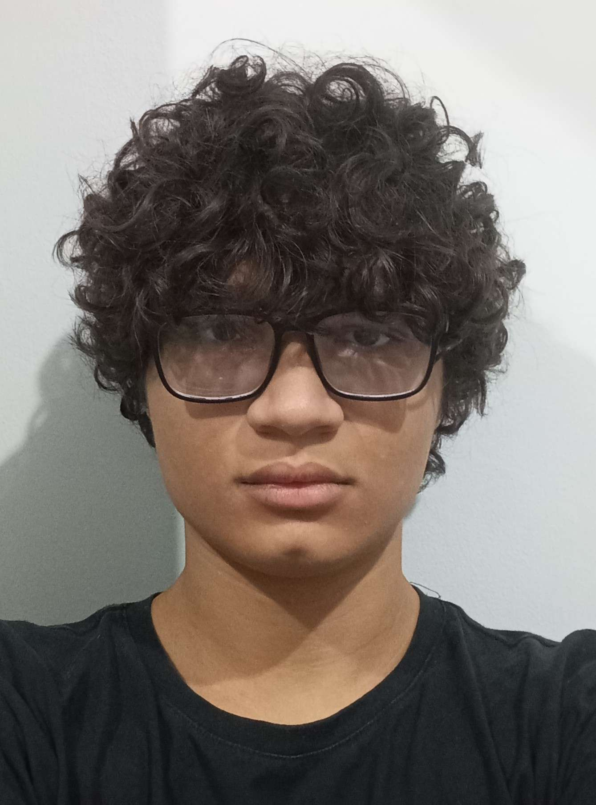

Olá! Meu nome é Ryan Jonathan, desenvolvedor front-endfocado em criar interfaces modernas e responsivas. Comecei na programação em 2020 e desde então venho trabalhando com tecnologias como React, JavaScript e CSS moderno. Já participei de projetos para startups e pequenas empresas, sempre buscando unir design e performance.